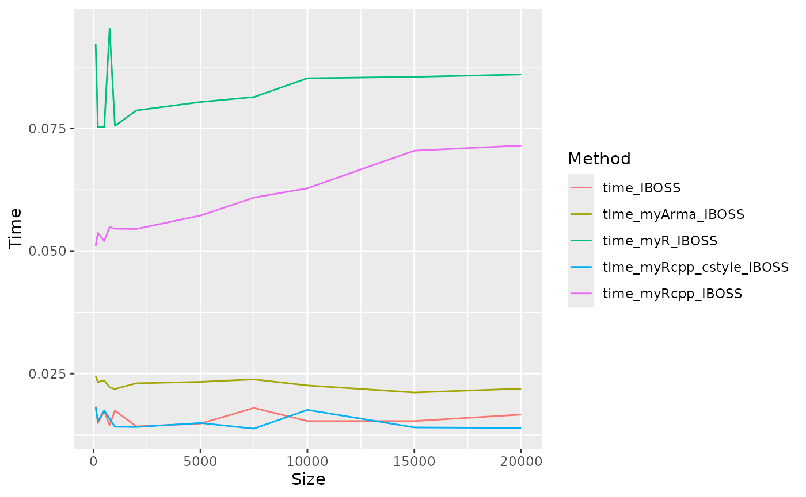
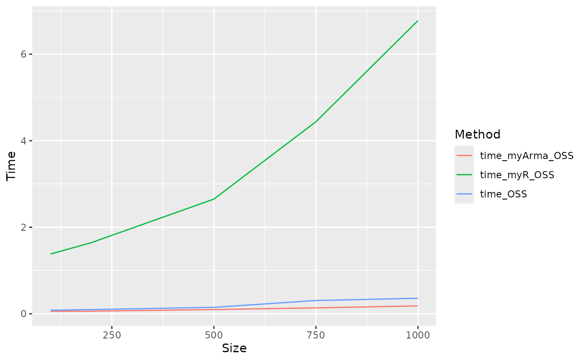

We compare some methods based on R, Rcpp
and RcppArmadillo by execueted IBOSS and OSS.
For some tasks C++ have awesome faster execution efficient than base R, RcppArmaillo provides a API for Armadillo (C++ library for linear algebra & scientific computing) which contains some convenient and efficient algorithm.
For the same task, different implementation methods may bring different speeds, and we have made a simple comparison here.
Generate data:
N <- 100000; d <- 7
sigma_norm <- matrix(0.5, d, d) + diag(0.5, d)
beta_true <- matrix(0.5, d, 1)
X <- withr::with_seed(123, mvtnorm::rmvnorm(N, mean = rep(0, d), sigma = sigma_norm))IBOSS
IBOSS used as the user interface for this package, but
we also write some functions based on different styles to compare the
computation efficiency.
-
myR_IBOSS: Written by the package itself usebase R. -
myRcpp_IBOSS: Written by the package itself useRcpplike r style (Vectorization as far as possible). -
myRcpp_cstyle_IBOSS: Written by the package itself useRcpplike C++ style (loops for scalar as far as possible). -
myArma_IBOSS: Written by the package itself useRcppArmadillolike r style (Vectorization as far as possible). -
IBOSS: Quoted from Yu et.al.(2022) (core code adapted from Wang et.al.(2019)) which use Rcpp but core code is C++ style (mainly loops against scalars).
Size <- c(100, 200, 500, 750, 1000, 2000, 5000, 7500, 10000, 15000, 20000)
time_IBOSS <- numeric(length(Size))
time_myR_IBOSS <- numeric(length(Size))
time_myRcpp_IBOSS <- numeric(length(Size))
time_myArma_IBOSS <- numeric(length(Size))
time_myRcpp_cstyle_IBOSS <- numeric(length(Size))
for (i in seq_along(Size)){
# paste0("Size: ", Size[i])
begin <- Sys.time(); index <- IBOSS(Size[i], X); time_IBOSS[i] <- Sys.time() - begin;
begin <- Sys.time(); index <- myR_IBOSS(Size[i], X); time_myR_IBOSS[i] <- Sys.time() - begin;
begin <- Sys.time(); index <- myRcpp_IBOSS(Size[i], X); time_myRcpp_IBOSS[i] <- Sys.time() - begin;
begin <- Sys.time(); index <- myArma_IBOSS(Size[i], X); time_myArma_IBOSS[i] <- Sys.time() - begin;
begin <- Sys.time(); index <- myRcpp_cstyle_IBOSS(Size[i], X); time_myRcpp_cstyle_IBOSS[i] <- Sys.time() - begin;
}
time_IBOSS <- data.frame(Size, time_IBOSS, time_myR_IBOSS, time_myRcpp_IBOSS,
time_myArma_IBOSS, time_myRcpp_cstyle_IBOSS)
time_IBOSS <- time_IBOSS %>%
pivot_longer(-Size, names_to = "Method", values_to = "Time")
ggplot(data = time_IBOSS, aes(x = Size, y = Time, group = Method, color = Method)) +
geom_line()
IBOSS is relatively simple and does not require much computation of the row. The use of C++ does not seem to improve efficiency significantly, from slow to fast:
-
myRcpp_IBOSS: Although Rcpp is used, it does not use too many C++ features, mainly vector operations, many steps inside the function have not been optimized, and the efficiency is low. -
myRcpp_cstyle_IBOSS: Using Rcpp with C++ features, heavy use of loops. The efficiency is not high, possibly because there are many custom functions inside the function, and the implementation method is not efficient enough. -
myArma_IBOSS: Despite the use of RcppArmadillo, the function interior is still R-style and does not take advantage of C++ effects. -
myR_IBOSS: Make use of R’s native functions as much as possible, and use its internal compilation optimization to improve the computation speed. -
IBOSS: Although called in Rcpp form, its internal functions are written in C++ style and mainly loop over scalars. The calculation speed is remarkably fast.
OSS
OSS used as the user interface for this package, but we
also write some functions based on different styles to compare the
computation efficiency.
-
OSS: Written by the package itself useRcpp. -
myR_OSS: Written by the package itself usebase R. -
myArma_OSS: Quoted from Zhu et.al.(2023) which use RcppArmadillo.
Size <- c(100, 200, 500, 750, 1000)
time_OSS <- numeric(length(Size))
time_myR_OSS <- numeric(length(Size))
time_myArma_OSS <- numeric(length(Size))
for (i in seq_along(Size)){
# paste0("Size: ", Size[i])
begin <- Sys.time(); index <- OSS(Size[i], X); time_OSS[i] <- Sys.time() - begin;
begin <- Sys.time(); index <- myR_OSS(Size[i], X); time_myR_OSS[i] <- Sys.time() - begin;
begin <- Sys.time(); index <- myArma_OSS(Size[i], X); time_myArma_OSS[i] <- Sys.time() - begin
}
time_OSS <- data.frame(Size, time_OSS, time_myR_OSS, time_myArma_OSS)
time_OSS <- time_OSS %>%
pivot_longer(-Size, names_to = "Method", values_to = "Time")
ggplot(data = time_OSS, aes(x = Size, y = Time, group = Method, color = Method)) +
geom_line()
OSS contains a large number of loops on rows and has dynamics vector changes. The advantages of C++ are obvious, from slow to fast:
-
myR_OSS: R is not good at looping (memory allocation in loops leads to slow speeds) and is not good at handling dynamic vector changes. -
OSS: Using Rcpp significantly increases speed. -
myArma_OSS: RcppArmadillo calls C++ Armadillo library, the internal algorithm is more efficient, more suitable for large scale computing.
It seems that Rcpp has better results, and RcppArmadillo has been further optimized.